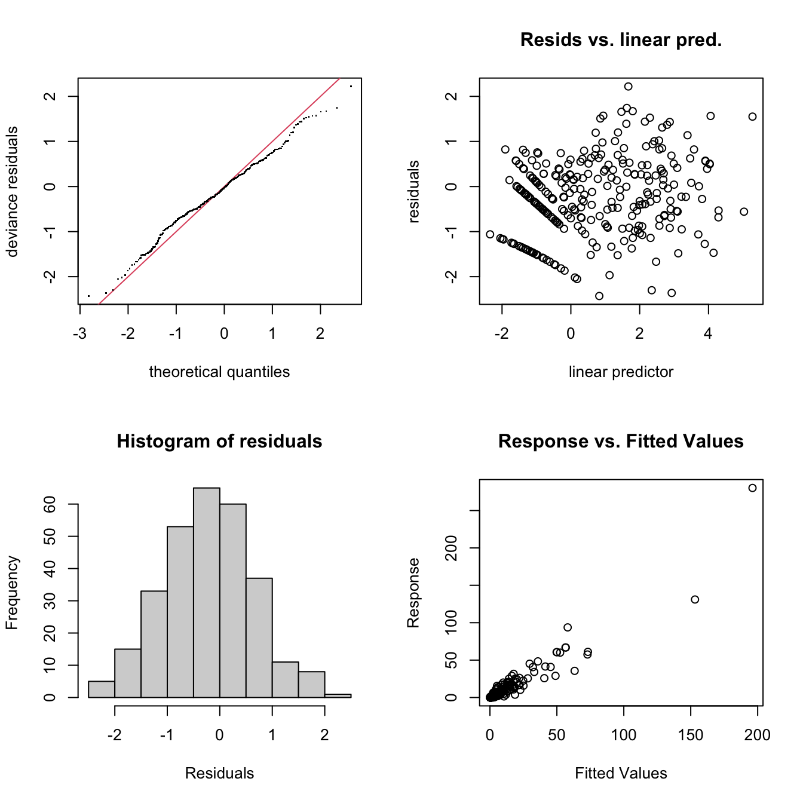
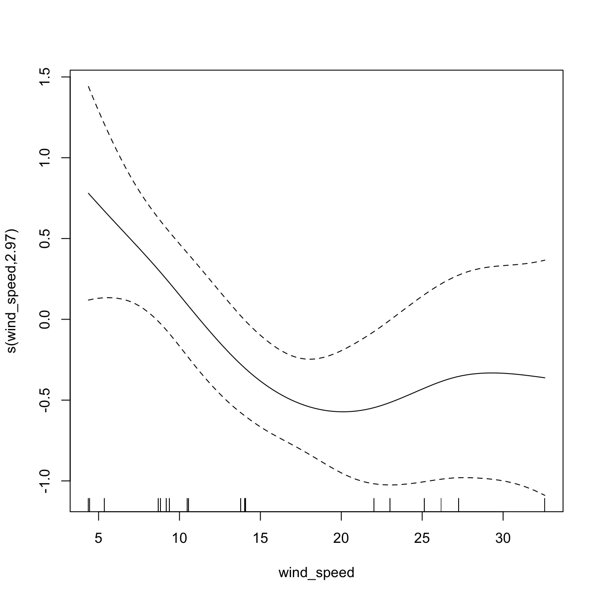
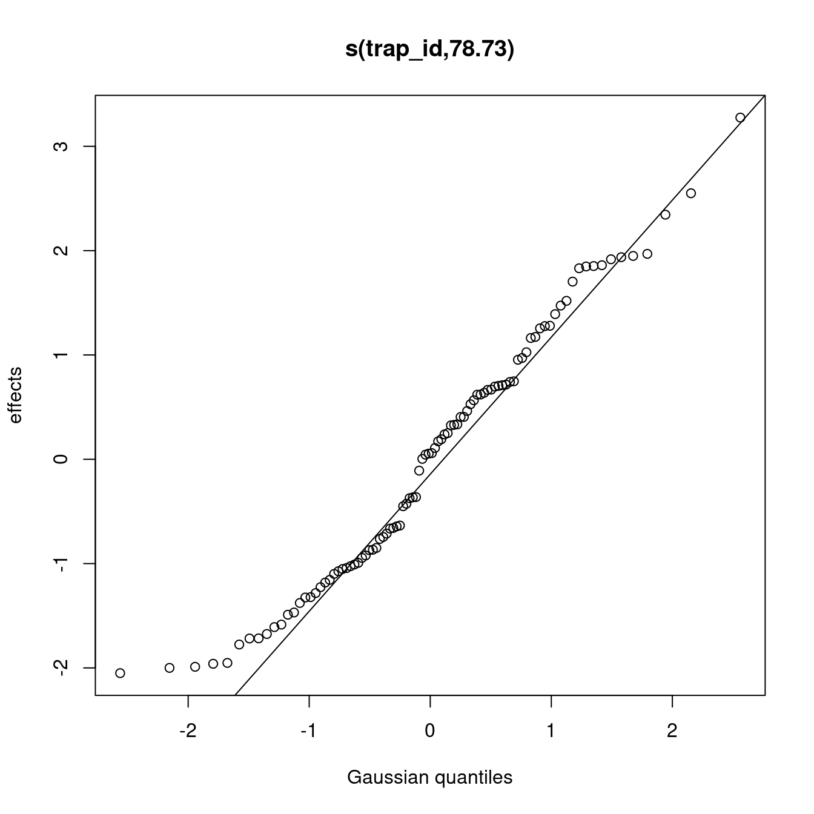
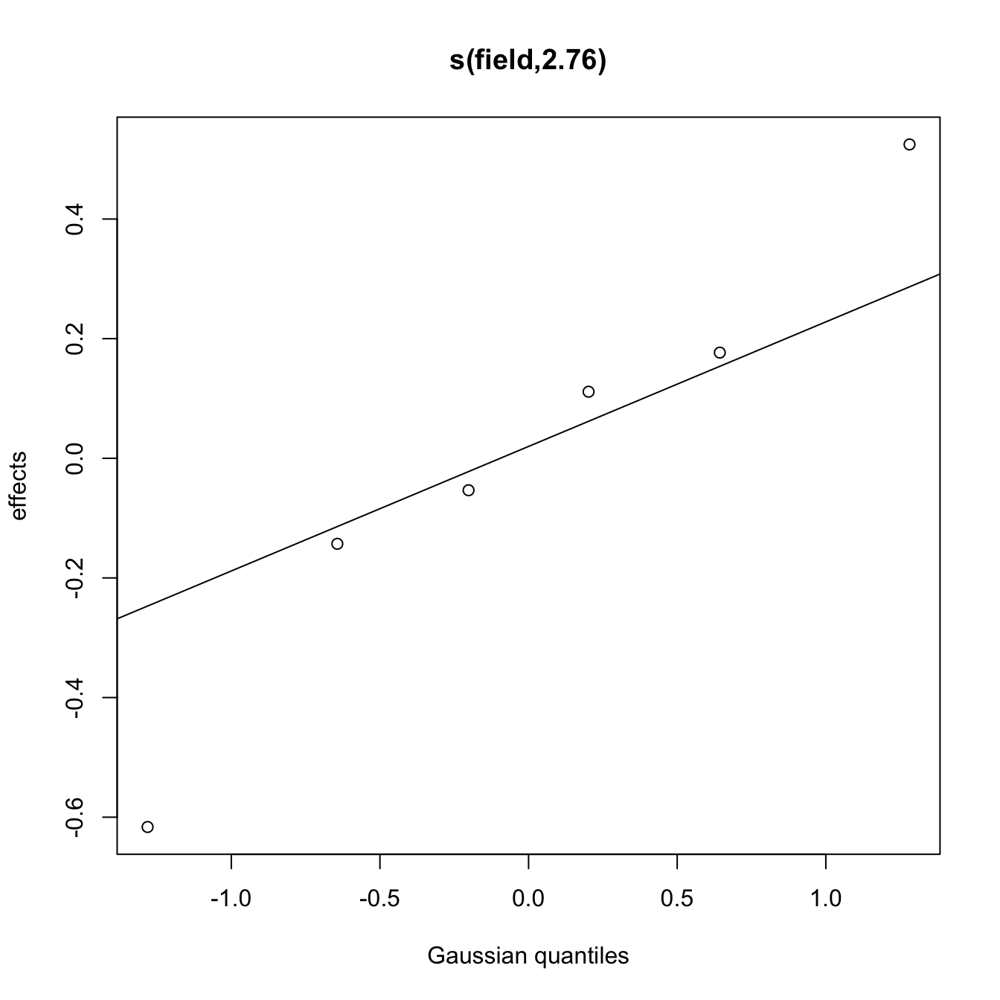
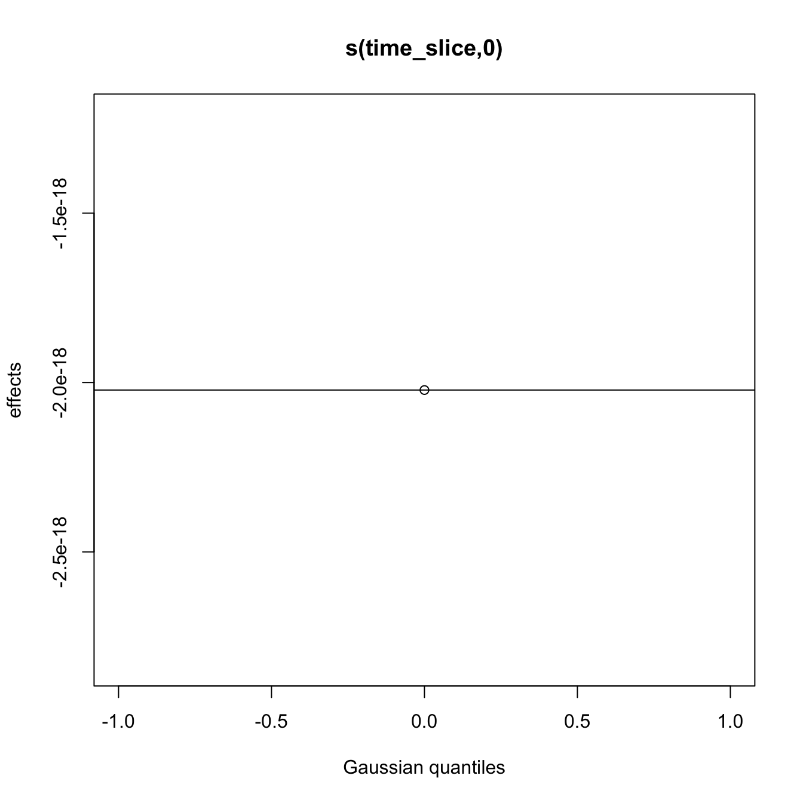

Fit models
Load libraries
library("tidyverse")
library("broom")
library("ggplot2")
library("ggpubr")
library("gratia")
library("here")
library("mgcv")
theme_set(theme_pubclean())Load data
load(here("data/mod_dat.Rdata"))Inspect the mod_dat object
mod_dat %>%
distinct(field, trap_coord, .keep_all = TRUE) %>%
select(trap_coord,
trap_degrees,
wind_degrees,
degree_dif,
downwind,
trap_id) %>%
print(n = Inf)## # A tibble: 24 × 7
## # Groups: field [6]
## field trap_coord trap_degrees wind_degrees degree_dif downwind trap_id
## <fct> <chr> <dbl> <dbl> <dbl> <chr> <fct>
## 1 1 N 0 76.2 76.2 lateral 1_N_100
## 2 1 E 90 76.2 13.8 upwind 1_E_100
## 3 1 W 270 76.2 194. downwind 1_W_100
## 4 1 S 180 76.2 104. lateral 1_S_100
## 5 2 N 0 201. 201. downwind 2_N_100
## 6 2 E 90 201. 111. lateral 2_E_100
## 7 2 W 270 201. 68.7 lateral 2_W_100
## 8 2 S 180 201. 21.3 upwind 2_S_100
## 9 3 NE 45 135. 90.3 lateral 3_NE_100
## 10 3 SE 135 135. 0.313 upwind 3_SE_100
## 11 3 NW 315 135. 180. downwind 3_NW_100
## 12 3 SW 225 135. 89.7 lateral 3_SW_100
## 13 4 N 0 35.9 35.9 lateral 4_N_100
## 14 4 E 90 35.9 54.1 lateral 4_E_100
## 15 4 W 270 35.9 234. lateral 4_W_100
## 16 4 S 180 35.9 144. lateral 4_S_100
## 17 5 NE 45 29.9 15.1 upwind 5_NE_100
## 18 5 SE 135 29.9 105. lateral 5_SE_100
## 19 5 NW 315 29.9 285. lateral 5_NW_100
## 20 5 SW 225 29.9 195. downwind 5_SW_100
## 21 6 N 0 2.16 2.16 upwind 6_N_100
## 22 6 E 90 2.16 87.8 lateral 6_E_100
## 23 6 W 270 2.16 268. lateral 6_W_100
## 24 6 S 180 2.16 178. downwind 6_S_100Because of the number of zeros in the data, we will use a Tweedie family for the models to help account for this, i.e. in the model functions you will see family = "tw" for this.
Model m1
- Response:
spore_cm2 - Linear predictors:
time_slice,distance_m,downwind - Smoothed predictors:
wind_speed - Random effects:
trap_id
m1 <- gam(
spore_cm2 ~ time_slice + distance_m + downwind +
s(wind_speed, k = 18) +
s(trap_id, bs = "re"),
method = "REML",
data = mod_dat,
family = "tw"
)
m1##
## Family: Tweedie(p=1.479)
## Link function: log
##
## Formula:
## spore_cm2 ~ time_slice + distance_m + downwind + s(wind_speed,
## k = 18) + s(trap_id, bs = "re")
##
## Estimated degrees of freedom:
## 3.45 81.35 total = 89.8
##
## REML score: 689.3144Model m2
- Response:
spore_cm2 - Linear predictors:
time_slice,distance_m,downwind - Smoothed predictors:
wind_speed - Random effects:
trap_id,field
m2 <- gam(
spore_cm2 ~ time_slice + distance_m + downwind +
s(wind_speed, k = 18) +
s(trap_id, bs = "re") +
s(field, bs = "re"),
method = "REML",
data = mod_dat,
family = "tw"
)
m2##
## Family: Tweedie(p=1.478)
## Link function: log
##
## Formula:
## spore_cm2 ~ time_slice + distance_m + downwind + s(wind_speed,
## k = 18) + s(trap_id, bs = "re") + s(field, bs = "re")
##
## Estimated degrees of freedom:
## 2.97 78.73 2.76 total = 89.46
##
## REML score: 688.1356Model m3
- Response:
spore_cm2 - Linear predictors:
time_slice,distance_m,downwind - Smoothed predictors:
wind_speed - Random effects:
trap_id,field,time_slice
m3 <- gam(
spore_cm2 ~ time_slice + distance_m + downwind +
s(wind_speed, k = 18) +
s(trap_id, bs = "re") +
s(field, bs = "re") +
s(time_slice, bs = "re"),
method = "REML",
data = mod_dat,
family = "tw"
)
m3##
## Family: Tweedie(p=1.478)
## Link function: log
##
## Formula:
## spore_cm2 ~ time_slice + distance_m + downwind + s(wind_speed,
## k = 18) + s(trap_id, bs = "re") + s(field, bs = "re") + s(time_slice,
## bs = "re")
##
## Estimated degrees of freedom:
## 2.97 78.73 2.76 0.00 total = 89.46
##
## REML score: 688.1356Model AIC
Check models for best fit using AIC.
models <- list(
m1 = m1,
m2 = m2,
m3 = m3
)
map_df(models, glance, .id = "model") %>%
arrange(AIC, BIC)## # A tibble: 3 × 8
## model df logLik AIC BIC deviance df.residual nobs
## <chr> <dbl> <dbl> <dbl> <dbl> <dbl> <dbl> <int>
## 1 m3 89.5 -517. 1221. 1563. 220. 199. 288
## 2 m2 89.5 -517. 1221. 1563. 220. 199. 288
## 3 m1 89.8 -518. 1223. 1566. 220. 198. 288Based on the AIC and BIC values, model m3 looks to be the best model for our data.
Inspect Model m3
Check model
gam.check(m3)
##
## Method: REML Optimizer: outer newton
## full convergence after 9 iterations.
## Gradient range [-5.70728e-06,5.051855e-06]
## (score 688.1356 & scale 0.9165479).
## Hessian positive definite, eigenvalue range [3.330669e-16,221.1686].
## Model rank = 125 / 125
##
## Basis dimension (k) checking results. Low p-value (k-index<1) may
## indicate that k is too low, especially if edf is close to k'.
##
## k' edf k-index p-value
## s(wind_speed) 1.70e+01 2.97e+00 0.90 0.29
## s(trap_id) 9.60e+01 7.87e+01 NA NA
## s(field) 6.00e+00 2.76e+00 NA NA
## s(time_slice) 1.00e+00 -3.82e-16 0.93 0.46The model fully converged after 9 iterations. All of the predictive factors included were significant at P > 0.05 and the smoothed predictors indicate a good fit with residuals being randomly distributed and enough basis functions for them to be properly fit. The Q-Q plot generally falls along the line indicating a sufficient fit. There is a bit of a pattern in the residual vs linear predictors but the histogram of residuals is a nice bell-shape. The response versus fitted values clusters nicely around the 1:1 line. In all, this model looks to explain the spore dispersal data very well.
Summarise and visualise model m3
summary(m3)##
## Family: Tweedie(p=1.478)
## Link function: log
##
## Formula:
## spore_cm2 ~ time_slice + distance_m + downwind + s(wind_speed,
## k = 18) + s(trap_id, bs = "re") + s(field, bs = "re") + s(time_slice,
## bs = "re")
##
## Parametric coefficients:
## Estimate Std. Error t value Pr(>|t|)
## (Intercept) 2.0340993 0.4696802 4.331 2.36e-05 ***
## time_slice 0.0031893 0.0007442 4.285 2.84e-05 ***
## distance_m -0.0036068 0.0013525 -2.667 0.00829 **
## downwindlateral -1.0768738 0.2272603 -4.739 4.10e-06 ***
## downwindupwind -1.7949412 0.3806819 -4.715 4.54e-06 ***
## ---
## Signif. codes: 0 '***' 0.001 '**' 0.01 '*' 0.05 '.' 0.1 ' ' 1
##
## Approximate significance of smooth terms:
## edf Ref.df F p-value
## s(wind_speed) 2.967e+00 3.465 2.688 0.02170 *
## s(trap_id) 7.873e+01 94.000 9.095 1.88e-06 ***
## s(field) 2.763e+00 5.000 57.555 0.12512
## s(time_slice) -3.822e-16 1.000 0.000 0.00645 **
## ---
## Signif. codes: 0 '***' 0.001 '**' 0.01 '*' 0.05 '.' 0.1 ' ' 1
##
## R-sq.(adj) = 0.855 Deviance explained = 90.4%
## -REML = 688.14 Scale est. = 0.91655 n = 288plot(m3)
Predict spore dispersal
mod_dat %>% distinct(downwind) %>% pull()## [1] "lateral" "upwind" "downwind" "downwind" "lateral" "upwind"
## [7] "lateral" "upwind" "downwind" "lateral" "upwind" "lateral"
## [13] "downwind" "upwind" "lateral" "downwind"newd <- expand_grid(
time_slice = c(90, 180, 270),
downwind = c("downwind", "lateral", "upwind"),
distance_m = seq(0, 400, 100),
wind_speed = 0:30,
field = 1,
trap_id = as.factor(apply(expand.grid(
1, c("_N_", "_S_", "_E_", "_W_"), c(100, 200, 300, 400)
),
1, paste, collapse = "")),
sub_sample = as.factor(c(1, 2))
)
newd$pred_spore_cm2 <- predict(m3, newd)Visualise spore dispersal predictions
Visualise the spore dispersal predictions for the three time-slices, 90, 180 and 270 minutes at 0m to 400m.
newd %>%
ggplot(aes(x = distance_m, y = pred_spore_cm2, col = downwind)) +
geom_smooth(method = "gam",
formula = y ~ s(x, k = 5),
size = 1) +
scale_fill_viridis_d("Prevailing wind") +
scale_colour_viridis_d("Prevailing Wind") +
facet_grid(. ~ time_slice) +
scale_x_continuous(sec.axis = sec_axis(
~ . ,
name = "Minutes since harvest beginning",
breaks = NULL,
labels = NULL
)) +
labs(x = "Distance from harvesting field (m)",
y = "Spores / m²") +
theme(
legend.position = "top",
legend.justification = "center",
legend.direction = "horizontal",
legend.background = element_blank(),
legend.key = element_blank()
) +
guides(fill = guide_legend(title.position = "top",
title.hjust = 0.5))
Predictions of spore dispersal (spores per meter squared) at 0m to 400m for three time points, 90 min, 180 min, 270 min after peanut harvest commenced.
ggsave(
last_plot(),
file = "plots/spore_prediction.png",
w = 5,
h = 2,
scale = 1.2
)